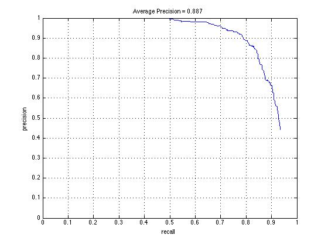
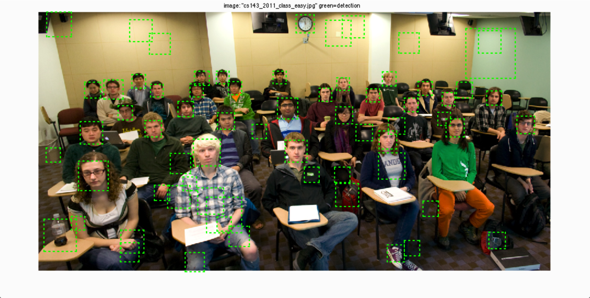
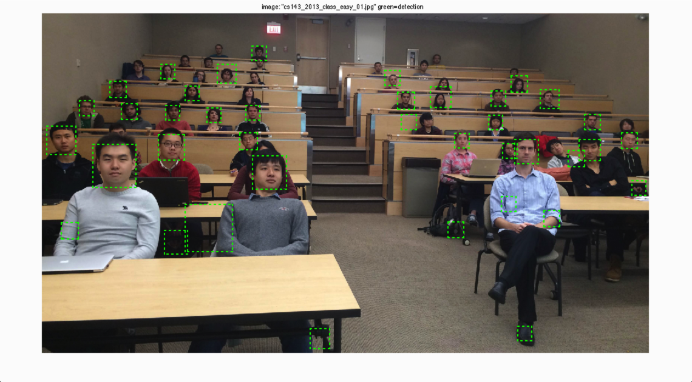
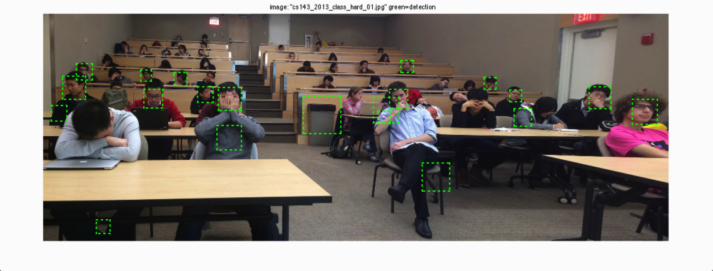
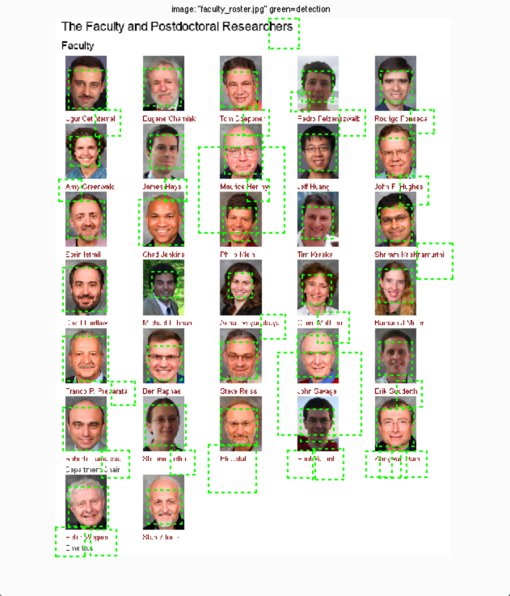

In this project, I implemented face detection using sliding window algorithm. First, I got positive HoG features from training images. Then I got negative HoG features from non-face images by randomly taking crops from them. I experimented with the number of negative examples, but increasing it from 10,000 to 20,000 didn't make a big difference. I also tried randomly scaling negative images before croping them to get HoGs, but it didn't contribute much either. After I got the positive and negative features, I used them to get a linear classifier. I experimented with different lamda values, and 0.0001 works pretty good for me.
After I got the classifier, I tested on windows of each scale of each test images, and ran non-maximum supression for each image after all the scales have been tested. I tested with various scaling step size, and the smaller the step size, the better result I would get. A step scale of 0.95 works well. I chose a confidence threshold of 1.0. The higher the threshold, the less false positives, but also the less true positives. The below images are the results.
    